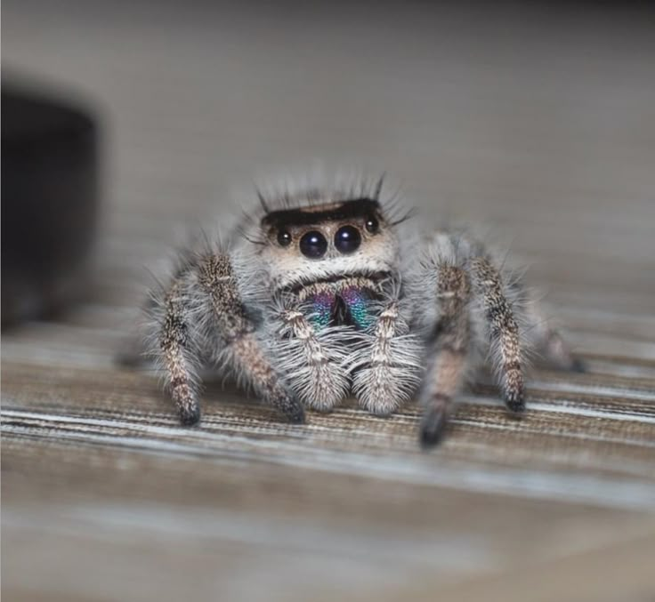
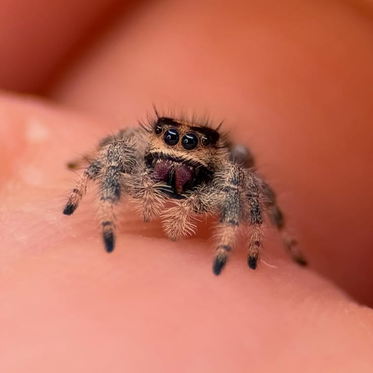
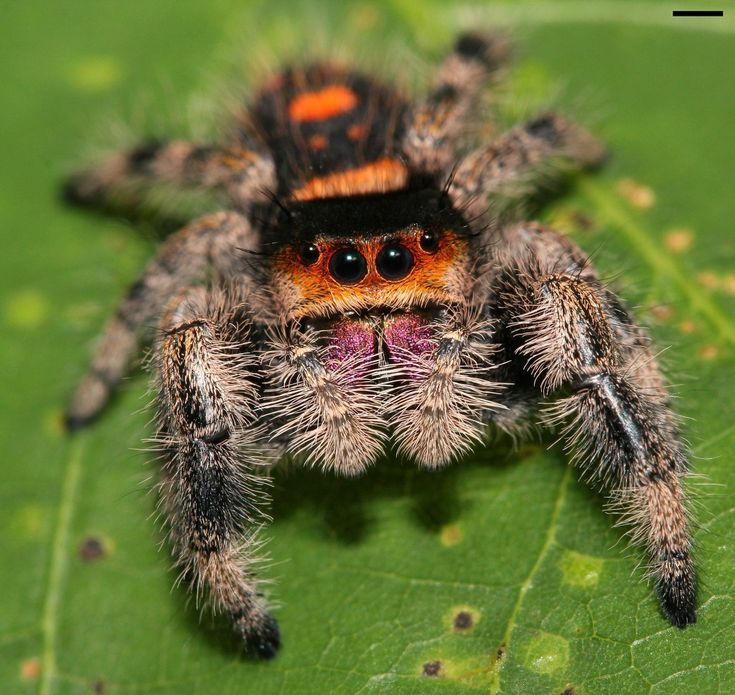

Jumping spider tend to have small venomous fangs that can be poisonous but it doesn't affect humans that much. The venomous that is "poisonous can only affect the human skin, it won't give you any real medical injury. Jumping spiders tend to have a different appearance from other spiders. They are typically small and have excellent vision. If they did end up biting you, it would likely be a minor irritation and not a serious medical concern.
First thing you need to do is research the specific care requirements for the species you are interested in. After doing research, you need to set up an appropriate habitat. You can do this by buying a small enclosure, like a critter keeper or a modified plastic container. Jumping spiders can molt up to 5-10 times in their lifetime. It depends on the species and the environmental conditions. When you noticed a jumping spider preparing to molt, it's best to leave it alone and not disturb it. They will often stop movingg and might hang upside down from a surface Ensure the enclosure has proper ventilation and humidity levels. This will help the spider molt successfully. When they're done molting, you can resume normal handling. However, you need to be careful not to handle them immediately after molting, as their exoskeleton is soft and vulnerable. foods they eat: flies, Mosquitoes, Gnats, small crickets, Caterpillars, etc.



There could be pros and cons of owning a jumping spider, pros would be that it's small in size, so it can be easy to take care of it, the jumping spiders can have a fascinating behavior, they have a Relatively low maintenace, and they don't need a big space for them to be comfortable.
The cons of owning a such a little spider, is that it can still be venomous, even if it's a small amount it can still cause some problems. They can sometimes be difficult to take care of, due to the fact they are small and have a schedule when it comes to taking care of it. They also have such a short lifespan, so it can be hard when it comes for them to pass away, espically if you get attached to them.